地瓜是口感佳、營養價值很高的食材，能變化出很多樣化的美味料理，像是台灣人最常吃的地瓜稀飯、市集裡常見的炸薯條、炸薯片、地瓜球......。
為了要體驗地瓜料理的過程，我們特別邀請專業的家政老師，利用課餘時間教導我們使用金山地瓜做出創意料理。這天我們全員到齊，一起在烹飪教室進行活動，以下要分享的是我們的活動過程及這些創意料理是怎麼完成的，有興趣的人不妨跟著我們一起動手做做看。
地瓜披薩

材料準備
溫水280g、乾酵母1T、糖1T
(放入碗中混和)
高筋麵粉300g
低筋麵粉200g
鹽1T
奶油25g
地瓜100g
步驟一：高粉和低粉加鹽，之後一起過篩，做成築粉牆，做完之後把已經有混合好的酵母水慢慢加進去(築粉牆中間)

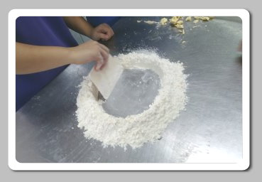
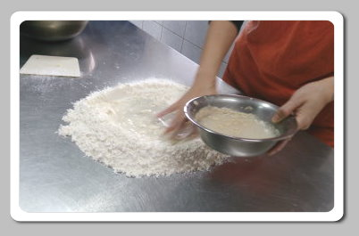
步驟二：之後把地瓜加進去，揉成麵糰

步驟三：快要揉成麵粉糰時，把奶油加進去

一直揉，※直到三光(桌子要光、麵團要光、手也要光)

步驟四：放到發酵箱50分鐘
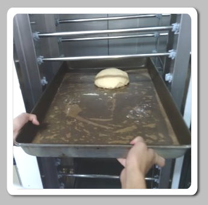
步驟五：發酵完時，再鬆弛10分鐘，
之後分成4等分(每一等分作成球狀，首由底部往上揉，若手會被麵團黏住，可以先沾一點麵粉，再繼續揉)

步驟六：最後把麵團擀平，擀平後抹上肉醬，放入烤盤，加上地瓜切丁撒在餅皮上，
進入烤箱，烤15分鐘再掉頭烤5分鐘，即可食用
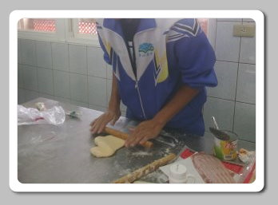
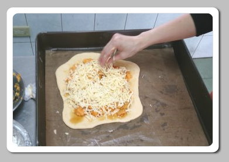
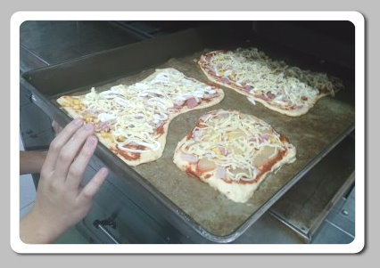
大功告成

地瓜戚風蛋糕蛋糕

材料準備
蛋黃5顆
低粉100g
糖20g
地瓜80g
牛奶100cc
油20g
玉米粉30g
蛋白6顆
萊姆酒1/2t
把所有的材料準備好

步驟一：一開始先把蛋黃與蛋白分開，分開後把蛋黃攪拌
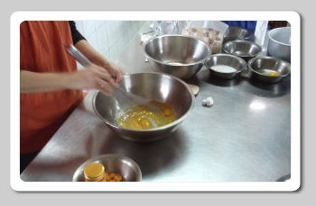
步驟二：糖、地瓜、牛奶、橄欖油依序加入後攪拌


步驟三：把玉米粉和低筋麵粉加在一起並過篩加入後攪拌
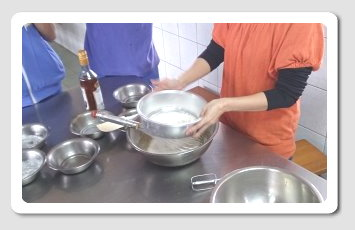
步驟四：蛋白先用攪拌機打發（必須從頭至尾同一方向）
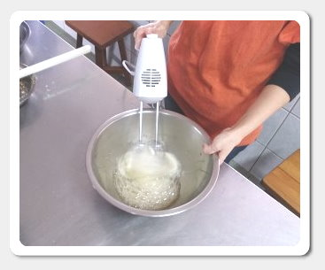
步驟五：打發後糖分三次加入（加一次打30秒）

步驟六：加完打發到蛋白霜可站立為止，之後再打1分鐘即可

步驟七：萊姆酒加入蛋黃鍋
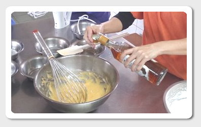
步驟八：蛋黃鍋加入1/3蛋白鍋攪拌

步驟九：蛋黃鍋倒入蛋白鍋裡拌勻後放入模型

大功告成

地瓜吐司
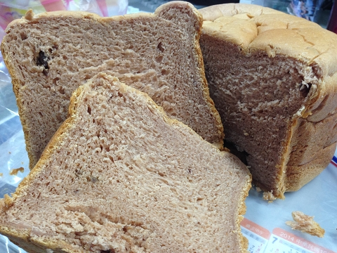
材料準備
麵包機
水180ml
鹽3/4小匙
糖2大匙
奶油20克
奶粉1大匙
高筋麵粉250克
酵母粉1/2小匙
步驟一：準備好材料，依順序丟入麵包機，
水、鹽、糖、奶油、奶粉、高筋麵粉、酵母粉
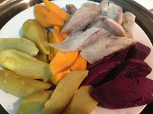
步驟二：丟入蒸熟了的地瓜
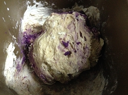
步驟三：啟動麵包機
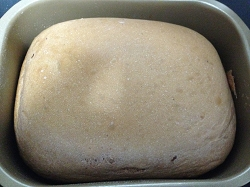
大功告成

2014.12.10於金山高級中學烘培教室
心得：
剛開始，大家都是抱持著緊張的心情來參與這項活動，每個人都專注於製作過程，都很注重每一項細節，小心翼翼，就怕哪個步驟出了差錯。我們所創作的料理是蜜地瓜戚風蛋糕以及地瓜披薩，這兩樣做完之後的口感都充滿了濃郁的地瓜香，蜜地瓜戚風蛋糕吃起來綿綿的、甜甜的；地瓜披薩吃起來還會牽絲，實在是太美味了。沒想到地瓜的用途如此的廣，不僅可以將它製作成這麼特別的料理，而且對人體還有益處，真是一項健康聖品！但是做完不能只顧著自己吃，而是要學會凡事都得與他人分享，獨樂樂不如與眾樂樂。製作DIY料理，不僅能學到創作新料理，還可以學習到與他人分享，真是一舉兩得。甘藷對金山的影響甚遠，不但拓展了金山的經濟，也打響了金山地瓜的知名度。